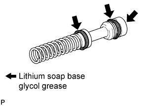
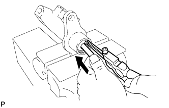
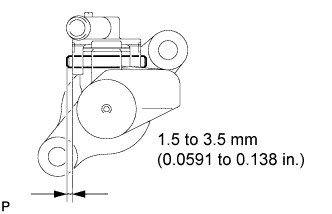

CLUTCH MASTER CYLINDER (for RHD) > REASSEMBLY |
| 1. INSTALL PISTON AND SPRING |
 |
Apply lithium soap base glycol grease to the circumference of the cups and the contact surfaces of the piston and push rod.
Install the spring and piston to the master cylinder.
| 2. INSTALL CLUTCH MASTER CYLINDER PUSH ROD |
 |
Fix the master cylinder in a vise.
Install the push rod and plate to the master cylinder.
Using snap ring pliers, install the snap ring.
Install a new boot.
Install the clevis to the push rod, and then temporarily install the nut.
| 3. INSTALL CLUTCH RESERVOIR GROMMET |
 |
Install a new grommet and the inlet union.
Using a pin punch and hammer, tap in the slotted spring pin as shown in the illustration.